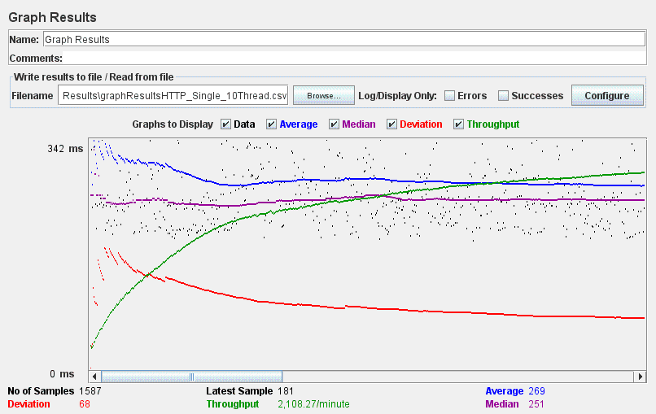
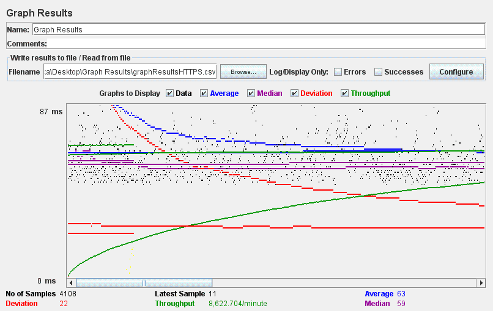
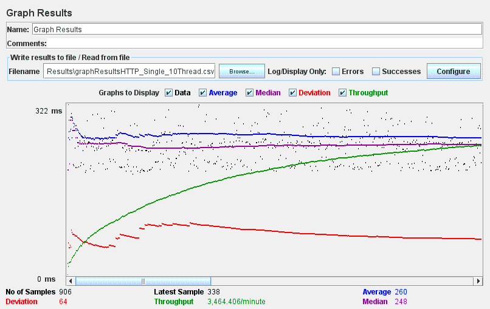

| Single-instance version cases |
Graph Results Screenshot |
Average Query Time(ms) |
Average Search Servlet Time(ms) |
Average JDBC Time(ms) |
Analysis |
| Case 1: HTTP/1 thread |
 |
277 |
233.981 |
233.900 |
This case is the base case |
| Case 2: HTTP/10 threads |
 |
269 |
224.153 |
224.086 |
Increase to 10 threads slows down the query time |
| Case 3: HTTPS/10 threads |
 |
62 |
8.10 |
8.01 |
We used the AWS machine for this single instance instead of local machine |
| Case 4: HTTP/10 threads/No prepared statements |
 |
264 |
250.59 |
250.47 |
Lack of prepared statements slows down the query time. |
| Case 5: HTTP/10 threads/No connection pooling |
 |
260 |
240.23 |
239.96 |
No connection pooling causes increased overhead closing the connections, slowing it down |